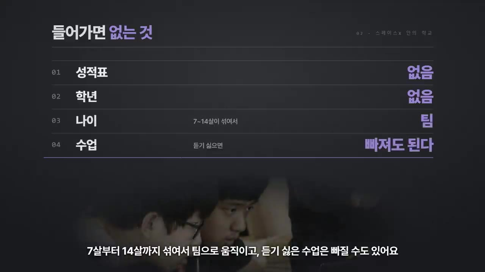
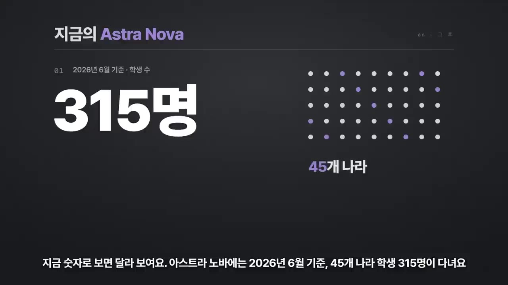
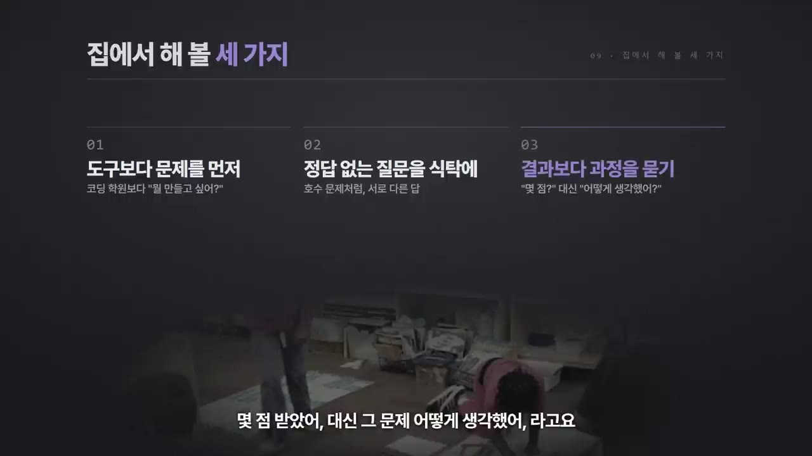

한눈에 보기
- 일론 머스크는 2014년 아들 다섯을 LA의 영재 사립학교에서 모두 빼고, 스페이스X 본사 안에 학교 '애드 아스트라(Ad Astra)'를 세웠다.
- 이 학교에는 성적표와 학년이 없고, 7~14살 아이들이 섞여 팀으로 움직였다. 음악·외국어·체육은 빼고 과학·공학·윤리를 가르쳤다.
- 학교를 꿰뚫는 원칙은 "도구가 아니라 문제를 가르쳐라"이다. 이 원칙이 가장 극단적으로 드러난 것이 정답 없는 토론 수업 '커넌드럼(Conundrum)'이다.
- 학교는 온라인 학교 '아스트라 노바(Astra Nova)'로 이어져 2026년 6월 기준 45개국 학생 315명이 다닌다. 실리콘밸리 부모들도 비슷한 생각으로 컴퓨터 없는 학교를 골랐다.
- 영상의 결론은 이렇다. AI가 정답을 몇 초 만에 내주는 시대에는 풀 문제를 스스로 찾는 힘이 더 비싸진다.
이런 분께 도움이 됩니다
- AI 시대에 아이를 어떻게 가르칠지 고민하는 부모님
- 머스크식 교육 실험의 실제 모습과 한계를 짧게 알고 싶은 분
- 집에서 오늘 바로 해 볼 수 있는 교육 습관 세 가지가 필요한 분
핵심 내용
머스크가 아이들을 학교에서 뺀 이유
- 2014년 머스크는 아들 5명을 LA의 영재 사립학교에서 모두 데리고 나왔다. 생각이 잘 맞던 교사 조슈아 단(Joshua Dahn) 한 명도 함께 데려왔다. (0:45)
- 머스크는 2015년 인터뷰에서 "일반 학교는 내가 해야 한다고 생각하는 걸 하지 않는다"고 말했다.
- 첫째 이유: 나이가 같다고 모두 같은 학년에 넣는 것. 수학, 언어, 음악 등 아이마다 잘하는 게 다른데 왜 같은 속도로 가르치냐는 것이다.
- 둘째 이유: "도구가 아니라 문제를 가르쳐라"(아래에서 따로 정리).
- 머스크 본인도 어릴 때 학교를 정말 싫어했다고 한다.
스페이스X 안의 학교 '애드 아스트라'
- 스페이스X 본사 건물 한쪽에 세운 학교이다. 이름은 라틴어로 '별을 향하여'라는 뜻이다. 처음 학생은 14명이었고, 그중 5명이 머스크의 아들이었다. (1:21)
- 학비는 받지 않았고 운영비는 머스크가 댔다. 미국 국세청 신고서에 찍힌 기부금만 47만 5천 달러(약 6억 원 이상)이다.
- 입학 경쟁이 치열했다. 2017년에는 400가족이 찾아왔지만 빈자리는 12개뿐이었다.
- 일반 학교와 다른 점:
| 항목 | 애드 아스트라 |
|---|---|
| 평가 | 성적표 없음 |
| 학급 | 학년 없음, 7~14살이 섞여 팀으로 움직임 |
| 수업 선택 | 듣기 싫은 수업은 빠질 수 있음 |
| 뺀 과목 | 음악·외국어·체육 (외국어는 "곧 컴퓨터가 통역해 줄 테니까") |
| 채운 과목 | 과학·공학·윤리 |
| 활동 | 로봇 만들기, 기상 관측 풍선 띄우기, 아이들이 원해서 EMP(전자기 펄스) 장비 제작까지 허용 |
| 경제 교육 | 학교 화폐 '아스트라'. 1년에 3번 열리는 장터(바자)에서 아이들이 회사를 차려 물건·서비스를 판매 |
- 한 언론은 이곳을 "학교보다 스타트업 인큐베이터(창업 지원 공간)에 가깝다"고 평했다. (2:20)

핵심 원칙: 도구가 아니라 문제를 가르쳐라
- 엔진을 가르치는 경우로 비교하면 다음과 같다. (2:33)
- 보통 방식: 드라이버·렌치 쓰는 법부터 가르친다. 아이는 이걸 왜 배우는지 모른다.
- 머스크 방식: 엔진을 하나 주고 "이거 어떻게 분해할래?"라고 묻는다. 아이가 스스로 "아, 렌치가 필요하구나"를 깨닫는다.
- 도구는 문제를 풀다가 막혔을 때 배운다.
💡 도구는 필요해진 순간에 배워야 왜 배우는지 잊지 않는다.
정답 없는 수업 '커넌드럼'
- 커넌드럼(Conundrum)은 '난제'라는 뜻이다. 정답이 없는 문제를 놓고 팀으로 토론해 자기 답을 만든다. (3:01)
- 점수는 없다. 대신 어떻게 생각했는지, 어떻게 같이 풀었는지를 본다.
- 예시는 영상 첫머리의 '호수 문제'이다. (0:00)
- 마을의 큰 회사가 호수에 화학물질을 버린다. 과학자들은 10년 안에 호수가 죽는다고 경고한다.
- 누군가 가짜 과학자 단체를 내세워 "호수는 멀쩡하다"는 연구를 내고, 언론은 그대로 받아쓴다.
- 정치인은 일자리를 핑계로 손을 놓고, 헷갈린 주민들은 그 정치인을 다시 뽑는다.
- 10년 뒤 호수가 죽었다면 누구의 잘못인가?
- 이 문제는 아스트라 노바의 입학 지원 문제였다. 지원자는 답을 영상으로 찍어 내야 했다.
- 영상이 밝힌 '정답'은 "정답은 없다. 어떤 답을 골랐느냐가 아니라 그 답에 어떻게 도달했느냐가 중요하다"이다. (5:39)
반전과 그 후: 학교의 흐름
🔁 애드 아스트라에서 아스트라 노바까지
- 2014 학교 설립
- 2017 입학 경쟁
- 2018 아들 이탈
- 2020 아스트라 노바
- 2024 텍사스 새 학교
- 2026 현재
- 12014 학교 설립
머스크가 아들 5명을 빼서 스페이스X 안에 애드 아스트라를 세움 (0:45)
- 22017 입학 경쟁
400가족이 지원했고 빈자리는 12개
- 32018 아들 이탈
머스크 아들 중 2명이 일반 고등학교로 간다는 보도가 나오며 학교의 미래를 걱정하는 목소리가 나옴 (3:21)
- 42020 아스트라 노바
교사·학생들이 따로 나와 온라인 학교를 세움. 학교 측은 머스크가 초기 자금 말고는 관여하지 않는다고 밝힘
- 52024 텍사스 새 학교
머스크가 유치원 나이 아이들을 위한 몬테소리식 애드 아스트라를 텍사스에 엶. 머스크 재단 초기 자금은 약 1억 달러(약 1,400억 원)로 알려짐
- 62026 현재
아스트라 노바에 45개국 학생 315명(6월 기준). 커넌드럼은 교육 앱 클래스도조(ClassDojo)와 함께 공개돼 전 세계 수백만 개 교실에서 쓰임 (3:55)

실리콘밸리 부모들도 같은 선택을 했다
- 2011년 뉴욕타임스는 실리콘밸리의 한 발도르프 학교를 1면에 다뤘다. 교실에 컴퓨터도 태블릿도 없는 학교이다. (4:29)
- 학부모 중에는 이베이 최고기술책임자(CTO), 구글·애플·야후·HP 직원들이 있었다.
- 기술을 만드는 사람들이 자기 아이에게는 기술부터 쥐여 주지 않은 셈이다. 이유는 머스크 학교와 같다. 기술은 결국 도구라는 것이다.
AI 시대에 이 방식이 중요한 이유
- 코딩도 로봇도 AI도 결국 도구이다. AI는 질문만 하면 몇 초 만에 정답을 내주지만, 무엇을 물어야 하는지, 어떤 문제가 풀 가치가 있는지는 알려 주지 않는다. (4:49)
- 정답을 찾는 능력의 값은 떨어지고, 풀 문제를 찾아내는 능력의 값은 올라간다. 영상은 이것이 머스크가 10년 전 학교에 건 판돈이라고 본다.
💡 AI가 정답을 대신 찾아 주는 시대에 남는 경쟁력은 '무엇을 물을지' 아는 힘이다.
집에서 해 볼 세 가지
| 방법 | 이렇게 |
|---|---|
| ① 도구보다 문제를 먼저 | 코딩 학원부터 알아보기 전에 아이에게 "뭘 만들고 싶어?"부터 묻기 |
| ② 정답 없는 질문을 식탁에 | 호수 문제처럼 정답 없는 질문을 하나 던지고, 가족끼리 서로 다른 답을 내 보기 |
| ③ 결과보다 과정을 묻기 | "몇 점 받았어?" 대신 "그 문제 어떻게 생각했어?" |
(5:13)

기억할 숫자·인용
- 2014년: 머스크가 아들 5명을 학교에서 빼고 애드 아스트라 설립
- 14명: 첫 학생 수 (그중 5명이 머스크의 아들)
- 47만 5천 달러(약 6억 원): 국세청 신고서에 찍힌 머스크의 기부금
- 400가족 대 빈자리 12개: 2017년 입학 경쟁
- 40명 미만: 애드 아스트라의 학생 규모
- 45개국 315명: 아스트라 노바 학생 수 (2026년 6월 기준)
- 약 1억 달러(약 1,400억 원): 2024년 텍사스 학교에 머스크 재단이 낸 초기 자금
- "도구가 아니라 문제를 가르쳐라." — 머스크
- "중요한 건 어떤 답을 골랐느냐가 아니라 그 답에 어떻게 도달했느냐."
생각해볼 점
- 영상도 스스로 짚었듯, 억만장자가 세운 학생 40명도 안 되는 작은 학교에서 통한 방식이 모든 아이에게 통한다고 단정하기는 어렵다. 학비 없이 막대한 자금이 들어간 환경이라는 점도 감안해야 한다.
- 호수 문제조차 한쪽 시각으로 기울어 있다는 지적이 있다고 영상이 언급했다. (내 의견) 실제로 문제 설정에 '가짜 과학자 단체' 같은 장치가 들어 있어, 정답 없는 문제라기보다 답이 어느 쪽으로 유도되는 문제로 읽힐 수 있다.
- (내 의견) 음악·외국어·체육을 뺀 결정은 머스크의 개인 가치관이 강하게 반영된 선택이다. "문제 중심 교육"이라는 원칙과 "특정 과목 제외"는 따로 떼어 보는 편이 좋다.
바로 해볼 일
- 오늘 저녁 식탁에서 호수 문제를 그대로 꺼내 가족에게 "누구 잘못일까?"를 묻고, 각자 답과 이유를 들어 보기
- 아이가 시험·숙제 이야기를 하면 "몇 점?" 대신 "그 문제 어떻게 생각했어?"라고 한 번 물어보기
- 아이 학원(코딩 등)을 알아보는 중이라면, 먼저 "그걸로 뭘 만들고 싶어?"를 물어 답을 적어 두기